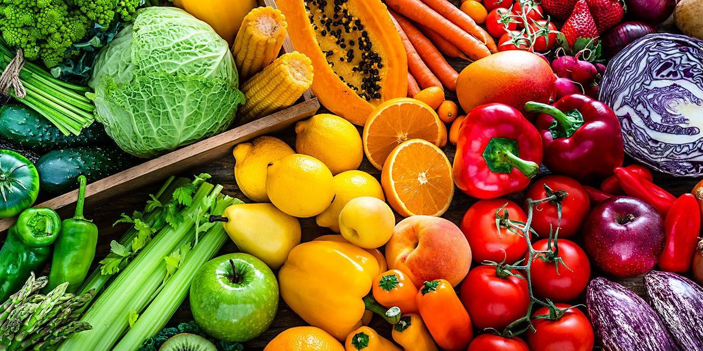
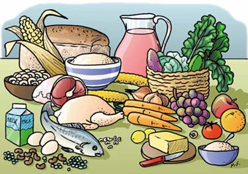
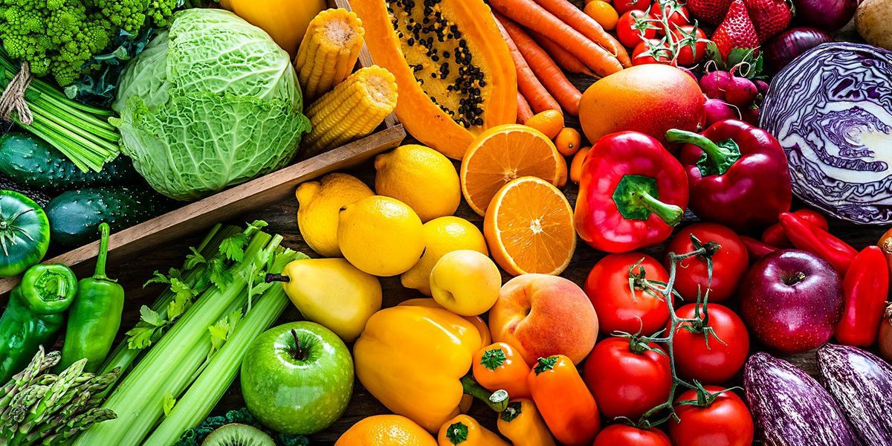
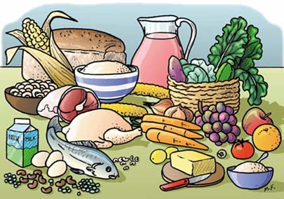

| MY MENU |
| Monday |
| Breakfast |
Smoked salmon and egg on a whole grain bagel with a portion of watercress, a medium low fat mocha drink. |
| Lunch |
A bowl of bean and vegetable soup drizzled with extra virgin olive oil, 1 slice of whole grain seeded bread, a portion of raw, fa side lightly steamed vegetables, such as carrots, broccoli, or garden peas, and a portion of fruit. |
| Dinner |
Greek mac and cheese casserole, a portion of steamed broccoli, asparagus, or another green vegetable. Greek yogurt with berries and nuts for dessert. |
| Tuesday |
| Breakfast |
Berry smoothie with protein powder. |
| Lunch |
Tuna salad sandwich on whole grain bread, a small bag of root vegetable chips, sliced crudités, such as carrots or bell peppers, and a banana. |
| Dinner |
Salmon with pineapple-avocado salsa and a portion of leafy greens. Cocoa chia seed pudding, a handful of strawberries, and an oat milk hot drink before bed. |
| Wednesday |
| Breakfast |
Oatmeal with banana, pumpkin seeds, and a drizzle of maple syrup, coffee with low fat milk. |
| Lunch |
Mashed avocado, roast turkey, and chopped tomatoes on two slices of whole grain toast, topped with extra virgin olive oil, shelled hemp seeds, and cayenne pepper, a handful of blueberries. |
| Dinner |
Chicken and vegetable stir fry served with 1 cup of steamed brown rice, two squares of dark chocolate, and a handful of walnuts. |
| Thursday |
| Breakfast |
Apple and peanut butter on a wholewheat English muffin, 1 cup of low fat milk. |
| Lunch |
One medium baked potato with 100 grams (g) beef chili and 28 g creme fraiche, a side serving of green beans or peas. |
| Dinner |
Veggie Korean bibimbap, kombucha drink. |
| Friday |
| Breakfast |
40 g granola, 100 g unsweetened Greek yogurt, 100 g blueberries, 3 tbsp flax seeds, coffee with low fat milk. |
| Lunch |
Tuna salad sandwich on whole grain bread with plenty of salad vegetables, such as cucumbers, peppers, diced tomatoes, and lettuce, a banana, a handful of nuts, one sliced orange, a cup of lemon and ginger herbal tea. |
| Dinner |
Rotisserie chicken tacos with pineapple salsa, a small baked sweet potato, a portion of arugula, two squares of dark chocolate with a handful of walnuts. |
| Saturday |
| Breakfast |
Two quinoa edamame egg muffins, a portion of grilled tomatoes and mushrooms drizzled with olive oil, a glass of almond milk. |
| Lunch |
Slow cooker black bean soup, a portion of watercress, roasted squash with paprika and rosemary. |
| Dinner |
One medium baked potato, 100 g chili, 28 g creme fraiche, a portion of leafy greens, three squares of dark chocolate with a handful of walnuts. |
| Sunday |
| Breakfast |
Sardines on two slices of whole grain toast with spread, a portion of fresh spinach, medium low fat mocha drink. |
| Lunch |
A grilled chicken fillet with 1 cup cooked broccoli, half a cup of cooked carrots, one corn on the cob, and an orange. |
| Dinner |
Slow cooker sweet potato curry served with one cup of cauliflower rice, one wheat paratha, a satsuma. |
 


